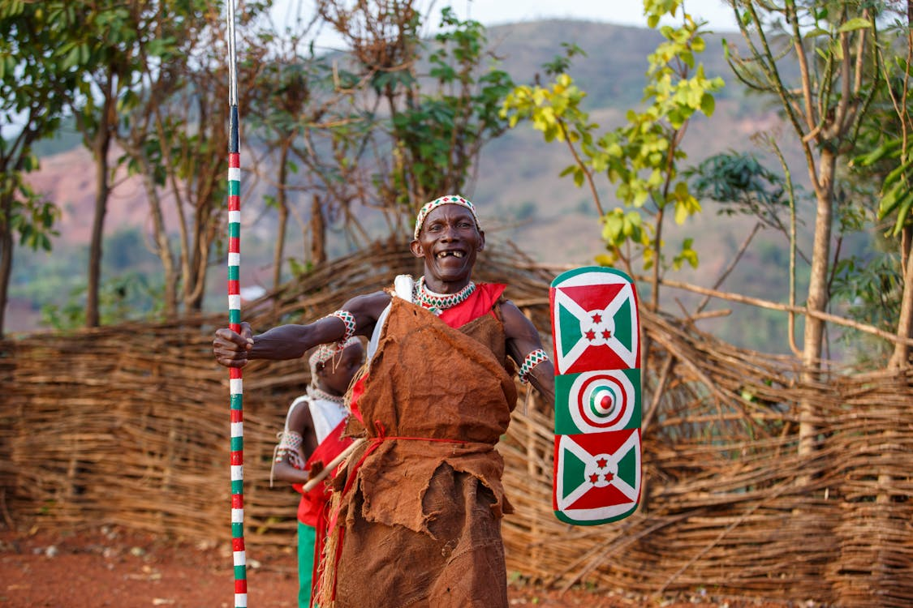
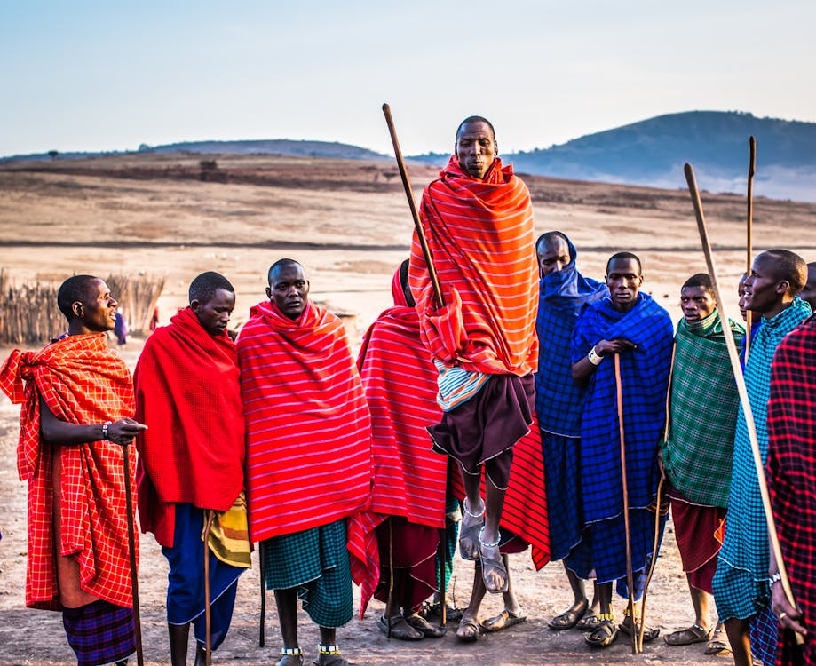
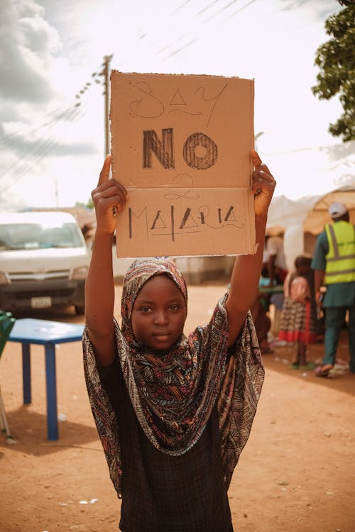

North Central


- North central
- Benue
- Kogi
- Kwara
- Nasarawa
- Niger
The Northcentral "Culture"
The North Central region of Nigeria is known for its rich and diverse cultural heritage. This region is home to a variety of ethnic groups, including the Tiv, Idoma, Nupe, and Gwari people, each with their unique traditions, languages, and customs. Traditional music and dance play a significant role in the cultural life of the North Central region, with various festivals and ceremonies showcasing the vibrant cultural expressions of the people. The region is also known for its traditional crafts, such as pottery, weaving, and beadwork, which are integral to the cultural identity of the communities.
In addition to its artistic expressions, the North Central region is renowned for its traditional cuisine, which features a variety of locally sourced ingredients and unique cooking methods. Popular dishes include pounded yam, egusi soup, and tuwo shinkafa, which are enjoyed by both locals and visitors. The region's cultural heritage is also reflected in its traditional attire, with colorful and intricately designed garments worn during special occasions and festivals. The North Central region's cultural diversity and rich traditions make it a vibrant and integral part of Nigeria's cultural landscape.
The Northcentral "People"
The people of the North Central region of Nigeria are known for their hospitality and communal lifestyle. They place a high value on family and community, often coming together to celebrate festivals, weddings, and other social events. The region is home to a variety of ethnic groups, each contributing to the rich cultural tapestry of the area. Traditional music, dance, and storytelling are integral parts of their cultural expression, with each ethnic group having its unique styles and traditions.
Education and agriculture are significant aspects of life in the North Central region. Many communities are involved in farming, producing crops such as yams, maize, and millet. Education is highly valued, with numerous schools and institutions providing opportunities for learning and personal development. The people of the North Central region are also known for their craftsmanship, creating beautiful pottery, textiles, and beadwork that reflect their cultural heritage. Their resilience and adaptability have allowed them to thrive in a diverse and dynamic environment.
The Northcentral "Geography"
The North Central region of Nigeria is characterized by a diverse and varied landscape. It features a mix of highlands, plateaus, and river valleys, contributing to its unique geographical makeup. The region is home to the Jos Plateau, which is known for its cooler climate and scenic beauty. The Benue River, one of Nigeria's major rivers, flows through the region, providing water resources for agriculture and other activities. The region's geography supports a range of agricultural activities, including the cultivation of crops such as yams, maize, and millet.
The North Central region also boasts significant mineral resources, including tin, limestone, and marble, which contribute to its economic activities. The presence of these natural resources has led to the development of mining industries in the area. Additionally, the region's diverse topography supports various ecosystems, including savannas, forests, and wetlands, which are home to a wide range of flora and fauna. The combination of its natural beauty, agricultural potential, and mineral wealth makes the North Central region an important and vibrant part of Nigeria.
Benue State is located in the North Central region of Nigeria. It is known for its rich agricultural produce, including yams, rice, and soybeans. The state is named after the Benue River, which is a major waterway in the region. Benue is also home to a diverse range of ethnic groups, including the Tiv, Idoma, and Igede people. The state capital is Makurdi, which serves as an administrative and commercial hub.
Kogi State is situated in the central part of Nigeria and is often referred to as the "Confluence State" because the confluence of the River Niger and River Benue occurs there. The state has a rich cultural heritage and is home to several ethnic groups, including the Igala, Ebira, and Okun people. Lokoja, the state capital, is historically significant as it was the first administrative capital of modern-day Nigeria. Kogi is also known for its natural resources, including coal and limestone.
Kwara State is located in the North Central region of Nigeria. It is known for its diverse cultural heritage and is home to various ethnic groups, including the Yoruba, Nupe, and Bariba people. The state capital, Ilorin, is a major educational and commercial center. Kwara is also known for its agricultural activities, with crops such as maize, cassava, and rice being widely cultivated. The state has a rich history and is known for its traditional festivals and cultural events.
Nasarawa State is situated in the North Central region of Nigeria. It is known for its scenic landscapes and natural attractions, including the Farin Ruwa Falls and the Keana Salt Village. The state is home to a diverse range of ethnic groups, including the Eggon, Alago, and Mada people. The state capital, Lafia, serves as an administrative and commercial center. Nasarawa is also known for its agricultural activities, with crops such as yam, maize, and rice being widely cultivated.
Niger State is located in the North Central region of Nigeria. It is the largest state in the country by land area and is known for its diverse cultural heritage. The state is home to several ethnic groups, including the Nupe, Gwari, and Hausa people. The state capital, Minna, is an important administrative and commercial center. Niger State is also known for its agricultural activities, with crops such as millet, sorghum, and rice being widely cultivated. The state is rich in natural resources, including gold and limestone.
North east


North east is representing both a geographic and a political region of the country's northeast
- North east
- Adamawa
- Bauchi
- Borno
- Gombe
- Taraba
- Yobe
Adamawa State is located in the northeastern part of Nigeria. It is known for its diverse cultural heritage and is home to various ethnic groups, including the Fulani, Bata, and Higgi people. The state capital, Yola, is an important administrative and commercial center. Adamawa is also known for its agricultural activities, with crops such as maize, rice, and groundnuts being widely cultivated. The state is rich in natural resources, including limestone and gypsum. Additionally, Adamawa is known for its scenic landscapes, including the Mandara Mountains and the Benue River.
Bauchi State is situated in the northeastern region of Nigeria. It is known for its rich cultural heritage and is home to several ethnic groups, including the Hausa, Fulani, and Sayawa people. The state capital, Bauchi, is a major administrative and commercial center. Bauchi is also known for its agricultural activities, with crops such as maize, millet, and groundnuts being widely cultivated. The state is rich in natural resources, including tin and limestone. Additionally, Bauchi is known for its tourist attractions, including the Yankari National Park and the Wikki Warm Springs.
Borno State is located in the northeastern part of Nigeria. It is known for its diverse cultural heritage and is home to various ethnic groups, including the Kanuri, Shuwa Arab, and Babur people. The state capital, Maiduguri, is an important administrative and commercial center. Borno is also known for its agricultural activities, with crops such as millet, sorghum, and groundnuts being widely cultivated. The state is rich in natural resources, including oil and natural gas. Additionally, Borno is known for its historical significance, including the ancient Kanem-Bornu Empire and the Lake Chad Basin.
Gombe State is situated in the northeastern region of Nigeria. It is known for its rich cultural heritage and is home to several ethnic groups, including the Fulani, Tangale, and Waja people. The state capital, Gombe, is a major administrative and commercial center. Gombe is also known for its agricultural activities, with crops such as maize, millet, and groundnuts being widely cultivated. The state is rich in natural resources, including limestone and gypsum. Additionally, Gombe is known for its scenic landscapes, including the Gombe Hills and the Dadin Kowa Dam.
Taraba State is located in the northeastern part of Nigeria. It is known for its diverse cultural heritage and is home to various ethnic groups, including the Jukun, Tiv, and Kuteb people. The state capital, Jalingo, is an important administrative and commercial center. Taraba is also known for its agricultural activities, with crops such as maize, rice, and groundnuts being widely cultivated. The state is rich in natural resources, including bauxite and limestone. Additionally, Taraba is known for its scenic landscapes, including the Mambilla Plateau and the Gashaka-Gumti National Park.
North west


North west is also representing both a geographic and a political region of the country's northwest
- North west
- Jigawa
- Kaduna
- Kano
- Katsina
- Kebbi
- Sokoto
- Zamfara
Jigawa State is located in the northwestern part of Nigeria. It is known for its rich cultural heritage and is home to various ethnic groups, including the Hausa and Fulani people. The state capital, Dutse, is an important administrative and commercial center. Jigawa is also known for its agricultural activities, with crops such as millet, sorghum, and groundnuts being widely cultivated. The state is rich in natural resources, including gypsum and kaolin. Additionally, Jigawa is known for its scenic landscapes, including the Hadejia-Nguru Wetlands and the Birnin Kudu Rock Paintings.
Kaduna State is situated in the northwestern region of Nigeria. It is known for its diverse cultural heritage and is home to several ethnic groups, including the Hausa, Fulani, and Gbagyi people. The state capital, Kaduna, is a major administrative and commercial center. Kaduna is also known for its educational institutions, including Ahmadu Bello University. The state is rich in natural resources, including gold and limestone. Additionally, Kaduna is known for its historical significance, including the Nok Culture and the Zaria Emirate.
Kano State is located in the northwestern part of Nigeria. It is known for its rich cultural heritage and is home to various ethnic groups, including the Hausa and Fulani people. The state capital, Kano, is an important administrative and commercial center. Kano is also known for its agricultural activities, with crops such as millet, sorghum, and groundnuts being widely cultivated. The state is rich in natural resources, including tin and limestone. Additionally, Kano is known for its historical significance, including the ancient Kano City Walls and the Kurmi Market.
Katsina State is situated in the northwestern region of Nigeria. It is known for its diverse cultural heritage and is home to several ethnic groups, including the Hausa and Fulani people. The state capital, Katsina, is a major administrative and commercial center. Katsina is also known for its agricultural activities, with crops such as millet, sorghum, and groundnuts being widely cultivated. The state is rich in natural resources, including kaolin and gypsum. Additionally, Katsina is known for its historical significance, including the Gobarau Minaret and the Katsina Royal Palace.
Kebbi State is located in the northwestern part of Nigeria. It is known for its rich cultural heritage and is home to various ethnic groups, including the Hausa and Fulani people. The state capital, Birnin Kebbi, is an important administrative and commercial center. Kebbi is also known for its agricultural activities, with crops such as millet, sorghum, and groundnuts being widely cultivated. The state is rich in natural resources, including gold and limestone. Additionally, Kebbi is known for its scenic landscapes, including the Kanta Museum and the Argungu Fishing Festival.
south south


south south It designates both a geographic and political region of the country's eastern coast.
- south south
- Akwa Ibom
- Bayelsa
- Cross River
- Delta
- Edo
- Rivers
Akwa Ibom State is located in the South-South region of Nigeria. It is known for its rich cultural heritage and is home to various ethnic groups, including the Ibibio, Annang, and Oron people. The state capital, Uyo, is an important administrative and commercial center. Akwa Ibom is also known for its oil and gas industry, being one of the leading oil-producing states in Nigeria. The state is rich in natural resources, including crude oil and natural gas. Additionally, Akwa Ibom is known for its scenic landscapes, including the Ibeno Beach and the Ibom Hotel & Golf Resort.
Bayelsa State is situated in the South-South region of Nigeria. It is known for its rich cultural heritage and is home to several ethnic groups, including the Ijaw, Nembe, and Ogbia people. The state capital, Yenagoa, is a major administrative and commercial center. Bayelsa is also known for its oil and gas industry, being one of the leading oil-producing states in Nigeria. The state is rich in natural resources, including crude oil and natural gas. Additionally, Bayelsa is known for its scenic landscapes, including the Oloibiri Oil Museum and the Bayelsa National Forest.
Cross River State is located in the South-South region of Nigeria. It is known for its diverse cultural heritage and is home to various ethnic groups, including the Efik, Ejagham, and Bekwarra people. The state capital, Calabar, is an important administrative and commercial center. Cross River is also known for its tourism industry, with attractions such as the Obudu Mountain Resort and the Calabar Carnival. The state is rich in natural resources, including limestone and granite. Additionally, Cross River is known for its agricultural activities, with crops such as cocoa, oil palm, and rubber being widely cultivated.
Delta State is situated in the South-South region of Nigeria. It is known for its rich cultural heritage and is home to several ethnic groups, including the Urhobo, Itsekiri, and Ijaw people. The state capital, Asaba, is a major administrative and commercial center. Delta is also known for its oil and gas industry, being one of the leading oil-producing states in Nigeria. The state is rich in natural resources, including crude oil and natural gas. Additionally, Delta is known for its scenic landscapes, including the River Ethiope and the Otuogu Beach.
south east
.jpg "south east")

south east also representing both a geographic and political region of the country's inland southeast
- south east
- Abia
- Anambra
- Ebonyi
- Enugu
- Imo
Abia State is located in the southeastern part of Nigeria. It is known for its rich cultural heritage and is home to various ethnic groups, including the Igbo people. The state capital, Umuahia, is an important administrative and commercial center. Abia is also known for its industrial activities, with the city of Aba being a major hub for manufacturing and trade. The state is rich in natural resources, including crude oil and natural gas. Additionally, Abia is known for its agricultural activities, with crops such as cassava, yam, and palm oil being widely cultivated.
Abia State is renowned for its vibrant markets, particularly the Ariaria International Market in Aba, which is one of the largest markets in West Africa. The market is a major center for the trade of textiles, footwear, and other goods. Abia's economy is significantly boosted by the activities in this market, making it a key player in the region's commerce. The state's strategic location and well-developed infrastructure contribute to its status as a commercial powerhouse in Nigeria.
Education is highly valued in Abia State, with numerous educational institutions spread across the region. The state is home to several universities, polytechnics, and colleges, including the prestigious Abia State University. These institutions provide quality education and contribute to the development of skilled professionals in various fields. The emphasis on education has led to a high literacy rate in the state, fostering a knowledgeable and capable workforce.
Abia State is also known for its rich cultural festivals and traditional events. The state celebrates various cultural festivals that showcase the heritage and traditions of the Igbo people. One of the most notable festivals is the New Yam Festival, which marks the beginning of the yam harvest season. During this festival, communities come together to celebrate with music, dance, and feasting, highlighting the importance of agriculture in the state's culture and economy.
Tourism is an emerging sector in Abia State, with several attractions drawing visitors to the region. The National War Museum in Umuahia is a significant historical site that preserves the history of the Nigerian Civil War. The Arochukwu Long Juju Slave Route is another notable attraction, offering insights into the region's history and heritage. Additionally, Abia's natural landscapes, including the Azumini Blue River and the Ngodo Cave, provide opportunities for eco-tourism and adventure activities.
Anambra State is located in the southeastern part of Nigeria. It is known for its rich cultural heritage and is home to various ethnic groups, predominantly the Igbo people. The state capital, Awka, is an important administrative and commercial center. Anambra is also known for its industrial activities, with the city of Onitsha being a major hub for trade and commerce. The state is rich in natural resources, including crude oil and natural gas. Additionally, Anambra is known for its agricultural activities, with crops such as cassava, yam, and palm oil being widely cultivated.
Anambra State is renowned for its vibrant markets, particularly the Onitsha Main Market, which is one of the largest markets in West Africa. The market is a major center for the trade of textiles, electronics, and other goods. Anambra's economy is significantly boosted by the activities in this market, making it a key player in the region's commerce. The state's strategic location along the River Niger and well-developed infrastructure contribute to its status as a commercial powerhouse in Nigeria.
Education is highly valued in Anambra State, with numerous educational institutions spread across the region. The state is home to several universities, polytechnics, and colleges, including the prestigious Nnamdi Azikiwe University. These institutions provide quality education and contribute to the development of skilled professionals in various fields. The emphasis on education has led to a high literacy rate in the state, fostering a knowledgeable and capable workforce.
Anambra State is also known for its rich cultural festivals and traditional events. The state celebrates various cultural festivals that showcase the heritage and traditions of the Igbo people. One of the most notable festivals is the Ofala Festival, which is celebrated by the traditional rulers and their subjects. During this festival, communities come together to celebrate with music, dance, and feasting, highlighting the importance of culture and tradition in the state's social life.
Tourism is an emerging sector in Anambra State, with several attractions drawing visitors to the region. The Ogbunike Caves, a UNESCO World Heritage Site, is a significant natural attraction that offers insights into the region's history and heritage. The Agulu Lake is another notable attraction, providing opportunities for eco-tourism and adventure activities. Additionally, Anambra's historical sites, such as the Nri Kingdom and the Igbo-Ukwu archaeological sites, offer a glimpse into the ancient civilization of the Igbo people.
Ebonyi State is located in the southeastern part of Nigeria. It is known for its rich cultural heritage and is home to various ethnic groups, predominantly the Igbo people. The state capital, Abakaliki, is an important administrative and commercial center. Ebonyi is also known for its agricultural activities, with crops such as rice, yam, and cassava being widely cultivated. The state is rich in natural resources, including lead, zinc, and limestone. Additionally, Ebonyi is known for its scenic landscapes, including the Abakaliki Rice Mill and the Ebonyi River.
Ebonyi State is renowned for its vibrant markets, particularly the Abakaliki Rice Mill, which is one of the largest rice mills in Nigeria. The market is a major center for the trade of rice and other agricultural produce. Ebonyi's economy is significantly boosted by the activities in this market, making it a key player in the region's agriculture. The state's strategic location and well-developed infrastructure contribute to its status as an agricultural powerhouse in Nigeria.
Education is highly valued in Ebonyi State, with numerous educational institutions spread across the region. The state is home to several universities, polytechnics, and colleges, including the prestigious Ebonyi State University. These institutions provide quality education and contribute to the development of skilled professionals in various fields. The emphasis on education has led to a high literacy rate in the state, fostering a knowledgeable and capable workforce.
Ebonyi State is also known for its rich cultural festivals and traditional events. The state celebrates various cultural festivals that showcase the heritage and traditions of the Igbo people. One of the most notable festivals is the Nkwa Umuagbogho Festival, which is celebrated by the traditional rulers and their subjects. During this festival, communities come together to celebrate with music, dance, and feasting, highlighting the importance of culture and tradition in the state's social life.
Tourism is an emerging sector in Ebonyi State, with several attractions drawing visitors to the region. The Abakaliki Rice Mill is a significant historical site that preserves the history of rice production in Nigeria. The Okposi Salt Lake is another notable attraction, offering insights into the region's history and heritage. Additionally, Ebonyi's natural landscapes, including the Afikpo Caves and the Unwana Beach, provide opportunities for eco-tourism and adventure activities.
Enugu State is located in the southeastern part of Nigeria. It is known for its rich cultural heritage and is home to various ethnic groups, predominantly the Igbo people. The state capital, Enugu, is an important administrative and commercial center. Enugu is also known for its coal mining activities, being one of the leading coal-producing states in Nigeria. The state is rich in natural resources, including coal and limestone. Additionally, Enugu is known for its scenic landscapes, including the Udi Hills and the Ngwo Pine Forest.
Enugu State is renowned for its vibrant markets, particularly the Ogbete Main Market, which is one of the largest markets in the region. The market is a major center for the trade of textiles, electronics, and other goods. Enugu's economy is significantly boosted by the activities in this market, making it a key player in the region's commerce. The state's strategic location and well-developed infrastructure contribute to its status as a commercial powerhouse in Nigeria.
Education is highly valued in Enugu State, with numerous educational institutions spread across the region. The state is home to several universities, polytechnics, and colleges, including the prestigious University of Nigeria, Nsukka. These institutions provide quality education and contribute to the development of skilled professionals in various fields. The emphasis on education has led to a high literacy rate in the state, fostering a knowledgeable and capable workforce.
Enugu State is also known for its rich cultural festivals and traditional events. The state celebrates various cultural festivals that showcase the heritage and traditions of the Igbo people. One of the most notable festivals is the Mmanwu Festival, which features masquerades and traditional dances. During this festival, communities come together to celebrate with music, dance, and feasting, highlighting the importance of culture and tradition in the state's social life.
Tourism is an emerging sector in Enugu State, with several attractions drawing visitors to the region. The Awhum Waterfall is a significant natural attraction that offers opportunities for eco-tourism and adventure activities. The Nike Lake Resort is another notable attraction, providing a serene environment for relaxation and leisure. Additionally, Enugu's historical sites, such as the Coal Mines and the Enugu Railway Station, offer a glimpse into the region's industrial heritage.
Imo State is located in the southeastern part of Nigeria. It is known for its rich cultural heritage and is home to various ethnic groups, predominantly the Igbo people. The state capital, Owerri, is an important administrative and commercial center. Imo is also known for its industrial activities, with the city of Owerri being a major hub for manufacturing and trade. The state is rich in natural resources, including crude oil and natural gas. Additionally, Imo is known for its agricultural activities, with crops such as cassava, yam, and palm oil being widely cultivated.
Imo State is renowned for its vibrant markets, particularly the Eke Ukwu Owerri Market, which is one of the largest markets in the region. The market is a major center for the trade of textiles, electronics, and other goods. Imo's economy is significantly boosted by the activities in this market, making it a key player in the region's commerce. The state's strategic location and well-developed infrastructure contribute to its status as a commercial powerhouse in Nigeria.
Education is highly valued in Imo State, with numerous educational institutions spread across the region. The state is home to several universities, polytechnics, and colleges, including the prestigious Imo State University. These institutions provide quality education and contribute to the development of skilled professionals in various fields. The emphasis on education has led to a high literacy rate in the state, fostering a knowledgeable and capable workforce.
Imo State is also known for its rich cultural festivals and traditional events. The state celebrates various cultural festivals that showcase the heritage and traditions of the Igbo people. One of the most notable festivals is the Iri Ji Festival, which marks the beginning of the yam harvest season. During this festival, communities come together to celebrate with music, dance, and feasting, highlighting the importance of agriculture in the state's culture and economy.
Tourism is an emerging sector in Imo State, with several attractions drawing visitors to the region. The Oguta Lake is a significant natural attraction that offers opportunities for eco-tourism and adventure activities. The Mbari Cultural and Art Center is another notable attraction, providing insights into the region's history and heritage. Additionally, Imo's natural landscapes, including the Nekede Zoo and the Ada Palm Plantation, provide opportunities for eco-tourism and adventure activities.
south west


south west is representing both a geographic and a political region of the country's southwest
descriptive list
- south west
- southwest Ekiti, Lagos, Ogun, Ondo, Osun, and Oyo